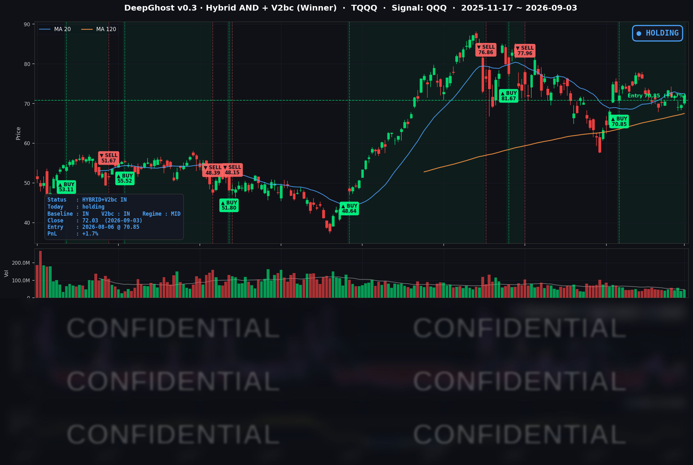

👻 매일 시그널과 히스토리를 홈페이지에서 한눈에 → www.ghostai.co.kr
연준 이사 한 명이 "9월 동결을 지지하겠다"고 말하자 네 지수가 모두 올랐고, 다우와 S&P 500은 한 달 만에 가장 큰 폭으로 상승했습니다. 국채금리가 4% 초반으로 내려가는지 잘 지켜봐야 합니다.
📊 오늘의 매매 신호
| 항목 | 내용 |
|---|---|
| 오늘 할 일 | ✅ 아무것도 안 해도 됩니다 |
| 포지션 상태 | 📈 TQQQ 보유 중 (IN POSITION) |
| 매수 진입일 | 2026-08-06 (21거래일째) |
| 진입가 → 현재가 | $70.85 → $72.03 |
| 현재 포지션 수익 | +1.67% |
TQQQ 시그널 — IN POSITION
현재 상태: 매수 포지션 유지 중 | 이번 포지션 수익률 +1.67%

나스닥100(QQQ)이 +1.19% 오르는 동안 TQQQ는 3배 레버리지로 +3.49% 마감했습니다. 그 결과 전일 -1.76%였던 전략의 평가손익이 오늘 +1.67%로 플러스 전환했습니다. 8월 6일 진입 이후 21거래일째 보유 상태이고, TQQQ 쪽에서 새로 발생한 매매 신호는 없었습니다.
오늘 미국 시장 — 시황 요약
지수 마감
| 지수 | 종가 | 등락률 | 비교 기준 |
|---|---|---|---|
| S&P 500 | 7,747.71 | +1.06% | 전일 대비 |
| 나스닥 종합 | 26,584.06 | +1.40% | 전일 대비 |
| 다우존스 | 53,686.11 | +1.18% | 전일 대비 |
| 러셀 2000 | 2,968.27 | +0.51% | 전일 대비 |
| QQQ (나스닥100) | 717.67 | +1.19% | 전일 대비 |
| TQQQ | 72.03 | +3.49% | 전일 대비 |
네 지수가 모두 올랐고 다우와 S&P 500은 8월 4일 이후 가장 큰 폭으로 상승했습니다. 어제는 소형주가 앞서고 대형 기술주가 뒤에 섰는데 하루 만에 순서가 뒤집혔습니다.
상승이 만들어진 시간대가 지수마다 달랐습니다. 나스닥은 개장 갭 +0.45%에 장중 +0.94%가 더해졌고 QQQ도 장중에 계속 올랐습니다. 반면 러셀 2000은 +0.51% 전부가 개장 갭이었고 장중 변동은 0.00%였습니다. 금리가 내린 날인데도 소형주는 개장 이후 제자리였습니다.
주간으로 보면(8/27 대비) S&P 500 +0.22%, 나스닥 +0.16%, 러셀 2000 -1.53%, QQQ -0.48%입니다. 오늘 크게 올랐는데도 나스닥100과 소형주는 잭슨홀 이후의 하락분을 아직 되돌리지 못했습니다.
국채 금리 동향
| 만기 | 수익률 | 전일 대비 |
|---|---|---|
| 3개월 | 3.740% | -3.2bp |
| 5년 | 4.509% | -4.3bp |
| 10년 | 4.762% | -3.4bp |
| 30년 | 5.243% | -2.4bp |
금리가 전 구간에서 함께 내렸습니다. 하락폭이 2~4bp로 비슷해 곡선 모양은 거의 그대로입니다. 장단기 스프레드(10년−3개월)는 +102.2bp로 전일 102.4bp와 사실상 같고, 역전 구간은 없습니다.
다만 금리가 내린 폭은 주가가 오른 폭에 비해 작았습니다. 9월 FOMC를 가장 직접 반영하는 3개월물은 잭슨홀 직후부터 9.4bp 올라 있었는데 오늘 되돌린 것은 3.2bp뿐입니다. 인상 프리미엄의 3분의 1만 빠진 셈입니다. 주식은 동결을 크게 반영했고 채권 단기물은 아직 절반 정도만 반영한 상태입니다.
10년물은 4.762%로 이틀간 머물던 4.796%에서 내려왔습니다. 4.796%는 2025년 1월 이후 가장 높은 종가였고, 오늘 하락에도 8월 27일 대비로는 여전히 9.0bp 높습니다. 금리에 민감한 업종은 그대로 반응해 리츠 10종목과 유틸리티 11종목이 모두 올랐습니다.
연준 발언 & 금리 패스
연준 크리스토퍼 월러 이사가 오늘 로이터 인터뷰에서 동결 쪽을 시사했습니다. "최근 데이터에서 마침내 물가 개선 신호가 보인다"고 했고, "2% 목표를 향한 진전이 이어지면 현 수준에서 금리를 유지하는 쪽을 지지하겠다"고 밝혔습니다.
다만 조건을 함께 달았습니다. "물가가 높게 나오면 인상을 고려하겠다", "8월 데이터에서 개선이 일시적이었던 것으로 나오면 9월 15~16일 FOMC에서 인상이 적절할 수 있다"는 표현입니다. 고용에 대해서는 "만족스러운 상태"라고 평가했습니다.
시장은 이를 조건부 완화 신호로 받아들였습니다. 8월 28일 잭슨홀에서 워시 의장이 물가 개선이 충분치 않다며 인상 가능성을 시사한 뒤 9월 인상 확률이 60%대까지 올라가 있었는데, 오늘 발언이 그 기대를 되돌려 5할 안팎으로 내려왔습니다(추정치는 출처마다 38%까지 차이가 있습니다).
결과적으로 동결의 조건이 9월 11일 발표될 8월 CPI로 좁혀졌습니다. 월러 이사 본인이 단서를 달아둔 만큼 9월 FOMC는 여전히 양방향입니다.
오늘의 핵심 이슈
1. 연준 발언 하나로 지수가 올랐지만 채권은 절반만 따라왔습니다. 다우 +1.18%, S&P 500 +1.06%로 8월 4일 이후 최대 상승폭이었고 나스닥은 +1.40%였습니다. VIX는 14.32로 5.79% 내려 8월 14일 이후 가장 낮은 종가였습니다. 그런데 금리 하락은 2~4bp에 그쳤고, 3개월물이 되돌린 인상 프리미엄은 3분의 1뿐입니다. 주식은 동결을 앞서 반영했고 채권은 다음 주 물가 지표를 기다리는 구도입니다.
2. 브로드컴 충격이 반도체 밖으로 번지지 않았습니다. 전일 장 마감 후 나온 4분기 매출 가이던스 348억 달러가 시장 예상 350억 달러를 밑돌면서 브로드컴은 시가 -4.25%로 출발했지만, 장중에 회복해 종가는 -2.74%였습니다. 여파는 업종 안에 남았습니다 — 반도체 17종목의 중앙 등락률이 -0.20%로 오른 종목이 절반에 못 미쳤습니다. 반면 소프트웨어·IT 서비스는 중앙 +2.40%로 그날 가장 강한 그룹이었고 오라클 +5.69%, 서비스나우 +6.49%, 팔란티어 +7.71%, 크라우드스트라이크 +5.68%가 이끌었습니다. S&P 500 종목의 67%가 오른 장에서 브로드컴은 아래에서 11번째였습니다. 같은 AI인데 하루 만에 주도권이 반도체에서 소프트웨어로 옮겨간 날입니다.
3. 상승이 대형주에 몰렸고 소형주는 개장 이후 움직이지 않았습니다. 러셀 2000은 +0.51%로 네 지수 중 가장 적게 올랐는데, 그 상승분이 전부 개장 갭이고 장중 변동은 0.00%였습니다. 같은 시간 나스닥은 장중에만 +0.94% 더 올랐습니다. 어제는 러셀 2000이 +1.13%로 앞섰으니 이틀 연속 로테이션 방향이 뒤집힌 셈이고, 주간으로 보면 러셀 2000만 -1.53%로 마이너스입니다. 어느 쪽도 자리를 잡지 못한 상태입니다.
변동성 & 투자심리
VIX는 14.32로 전일 대비 -5.79% 내렸습니다. 8월 14일(14.25) 이후 가장 낮은 종가이고, 9월 1일 16.34에서 이틀 만에 2.02포인트 내려왔습니다.
공포탐욕지수는 33~35 구간의 Fear입니다. 지수는 크게 올랐고 변동성은 한 달 만의 최저치인데 심리 지표는 여전히 공포 구간에 머물러 있습니다. 채권 단기물이 인상 프리미엄의 3분의 2를 유지하고 있는 것과 같은 맥락입니다. 지표 간 온도차가 큰 상태이며, 9월 4일 고용보고서와 9월 11일 물가 지표가 나오기 전까지는 어느 쪽으로도 확정되지 않습니다.
매크로 & 원자재
| 품목 | 종가 | 등락률 | 비교 기준 |
|---|---|---|---|
| WTI 원유 | $91.67 | +0.73% | 전일 대비 |
| Brent 원유 | $95.82 | +0.20% | 전일 대비 |
| 금 선물 | $4,520.30 | +3.53% | 전일 대비 |
| 금 ETF (GLD) | $410.22 | +1.85% | 전일 대비 |
금이 +3.53%로 크게 올랐습니다. 이틀 만에 4,348달러에서 4,520달러로 돌아오면서 8월 27일부터 이어진 하락폭의 3분의 2가량을 되돌렸습니다. 인상 확률이 낮아진 것이 직접적인 원인입니다.
유가는 9월 1일 이란 관련 급등 이후 91달러대에서 소폭 상승에 그쳤습니다. 다만 에너지 업종 주가는 중앙 -0.53%로 12종목 중 2종목만 올랐습니다 — 유가가 오른 날인데 주식은 따라가지 않았습니다.
오늘 발표된 지표로는 주간 신규 실업수당 청구가 206,000건으로 예상과 비슷했고, 챌린저 8월 감원 발표는 53,000건으로 2022년 이후 8월 기준 가장 적었습니다. 고용은 둔화 신호와 안정 신호가 섞여 있어 판정이 내일로 미뤄진 상태입니다.
주요 종목 동향
| 종목 | 종가 | 등락률 | 비고 |
|---|---|---|---|
| TSLA | 376.37 | +5.42% | 장 마감 후 오스틴 사이버캡 로보택시 공개 행사 대기, 모델 Y L 주행거리 상향 |
| META | 610.68 | +3.01% | 갭 +1.96% 후 장중에도 +1.02% 추가 상승 |
| MSFT | 510.12 | +2.68% | 소프트웨어 강세와 함께 510달러 회복 |
| NVDA | 228.45 | +1.80% | 허깅페이스 129.3억 달러 인수 공식 발표 |
| INTC | 91.67 | +1.80% | 갭 -0.78%에서 장중 +2.60% 반전 |
| GOOGL | 342.48 | +1.59% | 대형 기술주 강세 동조 |
| AMZN | 258.90 | +1.54% | 대형 기술주 강세 동조 |
| AAPL | 328.21 | +1.00% | 갭 없이 장중 상승분 그대로 |
| MU | 958.16 | +0.22% | 반도체 약세 속 소폭 상승 |
| NFLX | 82.67 | -0.07% | 갭 +0.54% 후 장중 -0.61% |
| QCOM | 168.57 | -0.82% | 브로드컴 여파, 갭 -0.86% 후 장중 보합 |
| AVGO | 357.16 | -2.74% | 시가 351.62(-4.25%)에서 회복, 커버리지 최대 낙폭 |
브로드컴(AVGO): 3분기 매출 296억 달러(+86% YoY), AI 반도체 매출 167억 달러(+221% YoY), 조정 EPS 3.32달러로 예상을 웃돌았습니다. 그런데 4분기 매출 가이던스 348억 달러가 예상 350.3억 달러를 밑돌면서 주가가 내렸습니다. 4분기 AI 반도체 가이던스는 217억 달러(+236% YoY)로 오히려 가속을 제시했으니, AI 수요가 꺾인 것이 아니라 비AI 부문을 포함한 총액이 기대에 못 미친 구도입니다.
엔비디아(NVDA): 허깅페이스 인수를 129.3억 달러에 공식 발표했습니다. 회사 역사상 두 번째로 큰 인수이며 규제 승인을 거쳐 2027년 상반기 종결 예정입니다. 9월 2일 블룸버그가 보도한 약 140억 달러보다 낮은 금액으로 확정됐는데도 주가는 +1.80% 올랐습니다.
실적이 좋아도 주가가 내리는 사례가 하나 더 있었습니다. 시에나(CIEN)는 EPS와 매출 모두 예상을 웃돌았는데 -10.36%로 S&P 500 최대 낙폭이었습니다. 4분기 이익률 안내와 2027~2028년까지 이어질 공급 제약 언급이 원인으로 지목됐습니다. AI 네트워킹·하드웨어 쪽에서는 실적 상회만으로 주가가 오르지 않는 구간입니다.
다음 거래일 일정
- 8월 고용보고서 — 9월 4일 08:30(동부시간). 시장 예상은 비농업 신규고용 +53,000명, 실업률 4.1% 유지입니다. 오늘 상승의 근거인 "9월 동결" 기대를 그대로 테스트하는 지표입니다.
- 테슬라 사이버캡 공개 결과 — 9월 3일 장 마감 후 행사였으므로 반응은 9월 4일 주가에 나타납니다.
- 8월 CPI — 9월 11일 08:30(동부시간). 월러 이사가 동결 지지의 조건으로 지목한 지표입니다.
- 9월 7일(월)은 노동절로 뉴욕증권거래소가 전면 휴장입니다. 9월 4일 다음 거래일은 9월 8일(화)이라, 고용보고서 결과가 사흘의 휴장 구간을 사이에 두고 이어집니다.
Ghost.AI — Quantitative AI Investment
Model: DeepGhost v0.3 | Transformer-Based Deep Learning
Coverage: 13 tickers | Updated every trading day after US market close
⚠️ 본 자료는 정보 제공 목적으로만 작성되었으며 투자 권유가 아닙니다. 모든 투자의 책임은 투자자 본인에게 있습니다. 과거 성과가 미래 수익을 보장하지 않습니다.
[유의사항]
- 본 서비스는 불특정 다수를 대상으로 발행되는 단방향 정보 제공 서비스이며, 투자자 개인의 재산 상황·투자 목적·위험 선호도를 반영한 개별 투자 조언이 아닙니다.
- 고스트에이아이 주식회사는 고객과 쌍방향 의사소통(개별 상담, 맞춤형 자문 등)을 제공하지 않습니다.
- 본 콘텐츠는 투자 권유 또는 매매 주문의 청약·청약의 권유에 해당하지 않으며, 최종 투자 판단 및 그에 따른 손익의 책임은 전적으로 투자자 본인에게 있습니다.
고스트에이아이 주식회사